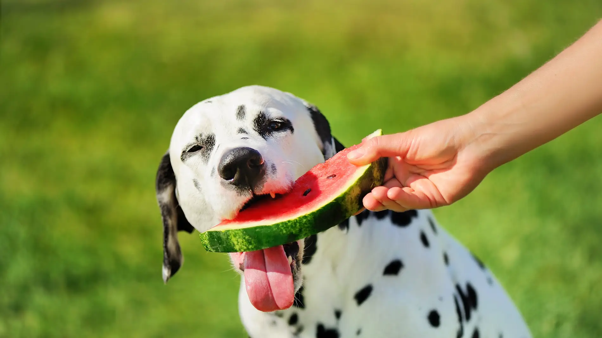

Todo sobre los perros
Los perros son conocidos como los mejores amigos del hombre. Son leales, cariñosos y una gran compañía.
Hay muchas razas de perros, desde los pequeños chihuahuas hasta los grandes gran daneses.
Además de ser mascotas, los perros también se utilizan en trabajos de servicio, como perros guías o de rescate.


Los perros tienen un increíble sentido del olfato, lo que los hace perfectos para trabajos de detección.